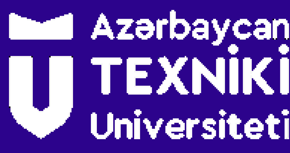
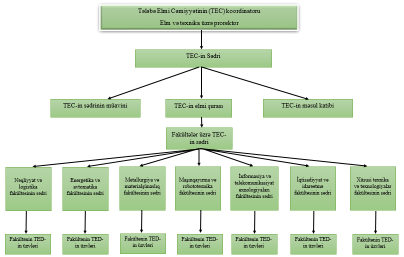

Tələbə Elmi Cəmiyyəti

Tələbə Elmi Cəmiyyəti (TEC) elmi tədqiqat və elmi-təşkilati işlərində fəal iştirak
edən ali təhsil pilləsinin bakalavriat və magistratura səviyyələrində, tibb təhsili sahəsində isə ali tibb
təhsili müəssisələrində və rezidenturada təhsil alan tələbələrin könüllü ictimai təşkilatıdır.
Cəmiyyət ali təhsil müəssisəsinin rəhbərliyinə tabedir və müəssisənin Elmi şurası qarşısında hesabat verir. Eyni
zamanda öz fəaliyyətində elm və təhsil sahəsində müvafiq normativ hüquqi aktları, “Təhsil haqqında” Azərbaycan
Respublikasının Qanununu, “Ali təhsil müəssisəsində təhsilalanların elmi tədqiqat işinin təşkili haqqında
Əsasnamə”ni, ali təhsil müəssisəsinin Nizamnaməsini və bu nümunəvi Əsasnaməni rəhbər tutur. TEC-in əsas məqsədi
ali təhsilli mütəxəssislərin hazırlanmasının keyfiyyətinin yüksəldilməsinə yönəldilmiş elmi-təşkilati
tədbirlərin həyata keçirilməsi, elmi-texniki potensialın qorunub saxlanılması və təhsilalanların elmi tədqiqat
fəaliyyətinin yeni sosialiqtisadi şəraitə uyğunlaşdırılmasında ali təhsil müəssisələrinin işinə kömək etməkdən
ibarətdir.
Əsas vəzifələri:
- Elm, təhsil və təcrübənin vəhdəti prinsipinə əsaslanaraq tələbələr arasında elmi yaradıcılığın müxtəlif
formalarının təbliğ edilməsi, həmin formalara və fundamental tədqiqatların aparılmasına gənclərin marağının
artırılmasına köməklik göstərilməsi;
- Tələbələrdə tədqiqatçılıq fəaliyyətinə və elmi metodların öyrənilməsinə motivasiyanın yaradılması, tədris
materiallarının dərindən və yaradıcı şəkildə mənimsənilməsinə köməklik göstərilməsi;
- Tədqiqatçılıq fəaliyyətinin köməyi ilə tələbələrdə seçilən peşəyə yaradıcı münasibətin formalaşdırılması;
- Tələbələrə elmi-texniki və iqtisadi məsələlərin müstəqil həlli yollarının üsul və vasitələrinin öyrədilməsi;
- İstedadlı gənclərin məqsədyönlü şəkildə elmi tədqiqat və elmi-təşkilati işinə, yüksək texnologiyaların
mənimsənilməsinə cəlb edilməsi;
- Elmi və elmi-pedaqoji kadr hazırlığı sistemi üçün perspektivli gənclərin seçilməsi və onların tədqiqatçılıq
fəaliyyətinə hazırlanması;
- Digər ali təhsil müəssisələrinin TEC-ləri ilə əməkdaşlığın həyata keçirilməsi, Tələbə Elmi Tədqiqat İşinin (bundan
sonra –TETİ) təşkilinə dair mütərəqqi müasir forma və metodların tələbələrin elmi tədqiqat işinə tətbiq edilməsi;
- Müxtəlif səviyyəli tədbirlərin: elmi seminar və konfranslar, tələbə elmi işlərinə, habelə kurs, buraxılış,
dissertasiya işlərinə baxış müsabiqələri, müxtəlif ixtisas və fənlər üzrə olimpiadalar, diskussiya klubları,
simpoziumlar, tanınmış alimlərin seminar və mühazirələrinin dinlənilməsi və s. tədbirlərin təşkili və keçirilməsində
tələbələrin iştirakının təmin edilməsi;
-Tələbələrin elmi-tədqiqat işlərinin nəşrə hazırlanması;
- İnnovasiya biznesi və sahibkarlıq vərdişlərinin formalaşması məqsədilə tələbələrin innovasiya fəaliyyətinə cəlb
edilməsinə köməklik göstərilməsi;
-Tələbələrin elmi mərkəzlər, texnoparklar, ideya inkubatoru və s. müəssisələrdə aparılan işlərə (o cümlədən
ödənişli) cəlb edilməsi;
- Ali məktəbdaxili və ali məktəbdənkənar elmi tədbirlər haqqında məlumatların toplanılması, yayılması və ali təhsil
müəssisəsinin internet səhifəsində yerləşdirilməsinin təşkil edilməsidir.